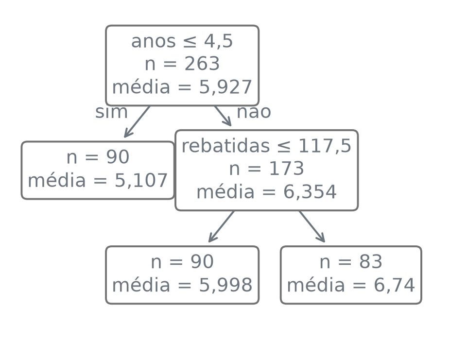
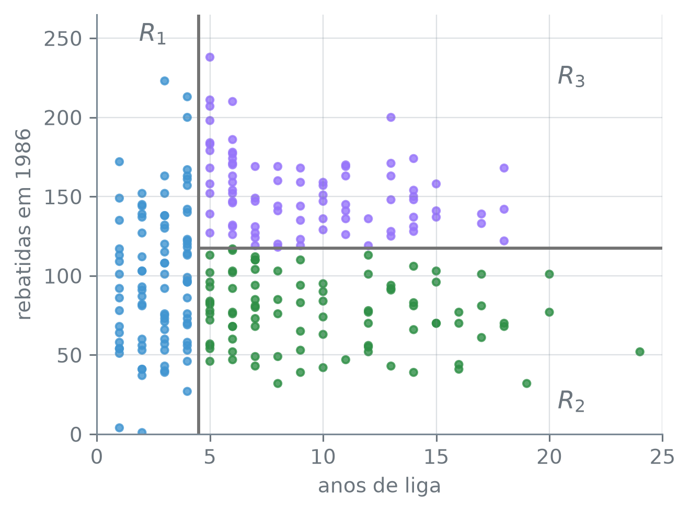
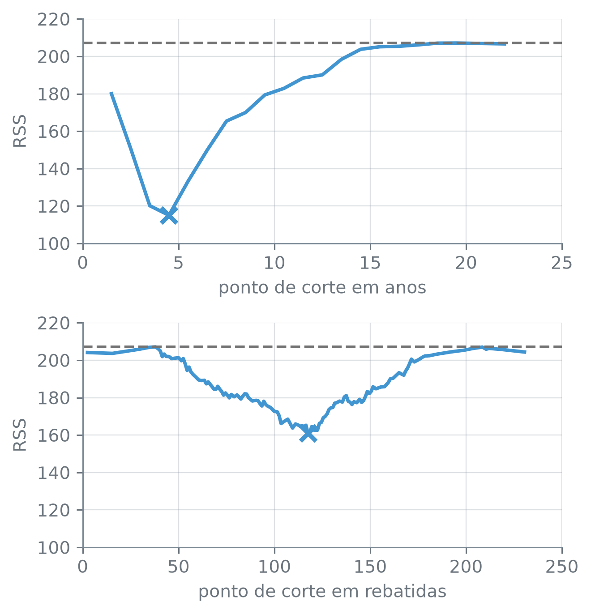

numero_br = lambda valor, casas=2: (
f"{valor:,.{casas}f}".replace(",", "_").replace(".", ",").replace("_", ".")
.replace("-", "−")
)Árvores de Regressão
Nota
Esta seção corresponde à seção 8.1.1 de James et al. (2023).
O salário de um jogador de beisebol tende a crescer com os anos que ele tem nas grandes ligas e com o desempenho na temporada anterior, mas não precisa crescer em linha reta, nem do mesmo jeito para um novato e para um veterano. Dá para prever o salário de um jogador com duas ou três perguntas de sim ou não sobre ele?
A função numero_br escreve os números com a pontuação brasileira:
Os salários
O conjunto Hitters reúne dados de jogadores das grandes ligas de beisebol norte-americanas: as estatísticas da temporada de 1986 e as mesmas estatísticas acumuladas na carreira (as colunas terminadas em _carreira), além do salário na temporada de 1987, em milhares de dólares. Os preditores são só duas colunas: anos, o número de anos do jogador nas grandes ligas, e rebatidas, o número de rebatidas na temporada anterior.
hitters = pd.read_csv("dados/Hitters.csv")
print("jogadores:", len(hitters))
print("sem salário:", hitters["salario"].isna().sum())
hitters = hitters.dropna()
print("depois do dropna:", len(hitters))
print("assimetria do salário:", numero_br(hitters["salario"].skew()))
y = np.log(hitters["salario"])
print("assimetria do log:", numero_br(y.skew()))jogadores: 322
sem salário: 59
depois do dropna: 263
assimetria do salário: 1,59
assimetria do log: −0,18pd.read_csv(caminho) — lê um arquivo CSV e devolve um DataFrame, uma coluna por campo do cabeçalho.
s.isna().sum() — isna marca com True cada valor ausente da série; a soma conta os True.
df.dropna() — devolve a tabela sem as linhas que têm algum valor ausente.
s.skew() — a assimetria da série: perto de zero numa distribuição simétrica, positiva quando há uma cauda longa à direita.
np.log(x) — o logaritmo natural de cada elemento.
Dos 322 jogadores, 59 não têm salário registrado, e sem a resposta não há o que prever: ficam 263. O salário tem assimetria de 1,59: uns poucos jogadores muito bem pagos formam uma cauda longa à direita. Como a árvore vai prever a média de cada grupo de jogadores, um grupo com um desses salários enormes teria a média puxada para cima por ele. O logaritmo do salário tem assimetria de −0,18, quase simétrico, e nele os salários enormes deixam de dominar a média. A resposta daqui em diante é y, o logaritmo do salário; a exponencial, np.exp, leva de volta à escala do salário, em milhares de dólares.
Uma árvore com três folhas
Uma árvore de regressão faz perguntas de sim ou não sobre os preditores, uma de cada vez, e prevê para cada jogador a média da resposta dos jogadores de treino que seguiram o mesmo caminho de perguntas. A árvore é feita de nós: cada pergunta é um nó, e cada saída, sim ou não, é um ramo que sai dele e leva a outro nó. Os nós do fim, em que não se pergunta mais nada, são as folhas, e cada folha é um grupo final de jogadores. O DecisionTreeRegressor do scikit-learn constrói a árvore; com max_leaf_nodes=3, ela para quando tiver três folhas.
X2 = hitters[["anos", "rebatidas"]]
arvore = DecisionTreeRegressor(max_leaf_nodes=3, random_state=12)
arvore.fit(X2, y)
print("folhas:", arvore.get_n_leaves())
print("profundidade:", arvore.get_depth())folhas: 3
profundidade: 2DecisionTreeRegressor(max_leaf_nodes, random_state) — a árvore de regressão. max_leaf_nodes limita o número de folhas: a árvore cresce dividindo, a cada passo, o grupo cuja divisão mais reduz o erro de treino, e para ao chegar ao limite. random_state fixa a ordem em que as colunas são examinadas, que decide empates entre dois cortes igualmente bons.
arvore.fit(X, y) — constrói a árvore com as linhas de X e a resposta y.
arvore.get_n_leaves(), arvore.get_depth() — o número de folhas e o maior número de perguntas feitas a um jogador até chegar a uma delas.
Três folhas, e no máximo duas perguntas por jogador. Quais perguntas, a figura mostra. O plot_tree desenha a árvore em inglês, com o ponto decimal; a função em_portugues, abaixo, traduz o texto de cada caixa e dá a ela um fundo branco, para que a seta não atravesse o texto:
import re
def em_portugues(anotacoes):
"""Traduz e ajusta as caixas que o plot_tree desenha."""
for anotacao in anotacoes:
texto = (anotacao.get_text()
.replace("samples", "n").replace("value", "média")
.replace("<=", "≤")
.replace("True", "sim").replace("False", "não"))
texto = re.sub(r"(\d)\.(\d)", r"\1,\2", texto)
anotacao.set_text(texto)
caixa = anotacao.get_bbox_patch()
if caixa is not None:
caixa.set(facecolor="white", edgecolor="0.45")em_portugues(caixas) — para cada caixa, lê o texto (get_text), troca os termos em inglês, põe vírgula no lugar do ponto entre dois dígitos (re.sub, que substitui cada trecho que casa com um padrão) e grava o texto novo (set_text); depois pinta de branco a caixa em volta dele (get_bbox_patch().set).
fig, ax = plt.subplots(figsize=(4.0, 3.0))
caixas = plot_tree(arvore, feature_names=list(X2.columns), impurity=False,
rounded=True, precision=3, fontsize=10, ax=ax)
em_portugues(caixas)
plt.show()
plt.subplots(figsize=(largura, altura)) — cria uma figura, com o tamanho em polegadas, e o eixo ax em que se desenha. plt.show() — exibe a figura pronta.
plot_tree(arvore, feature_names, impurity, rounded, precision, fontsize, ax) — desenha a árvore ajustada e devolve a lista das caixas de texto. feature_names dá os nomes das colunas (sem ele, sai x[0]); impurity=False omite o erro de cada nó; precision é o número de casas decimais; rounded=True arredonda os cantos das caixas; fontsize é o tamanho da letra.
A primeira pergunta é sobre anos. Os jogadores com até 4 anos de liga vão para uma folha só, e nenhuma pergunta sobre rebatidas é feita a eles. Os que têm 5 anos ou mais são separados de novo pelas rebatidas da temporada anterior, em 117,5. A tabela abaixo resume as três folhas. A coluna “típico” é a exponencial da média do logaritmo, em dólares; a coluna “média” é a média dos salários da folha, também em dólares:
folhas = pd.DataFrame({"folha": arvore.apply(X2), "log": y,
"dolares": hitters["salario"] * 1000})
resumo = folhas.groupby("folha").agg(n=("log", "size"),
log=("log", "mean"),
media=("dolares", "mean"))
resumo.index = ["R1", "R2", "R3"]
resumo.insert(2, "tipico", np.exp(resumo["log"]) * 1000)
print("típico abaixo da média:",
bool((resumo["tipico"] < resumo["media"]).all()))
resumo.columns = ["n", "média do log", "típico", "média"]
resumo.style.format({"média do log": lambda v: numero_br(v, 3),
"típico": lambda v: numero_br(v, 0),
"média": lambda v: numero_br(v, 0)})típico abaixo da média: True| n | média do log | típico | média | |
|---|---|---|---|---|
| R1 | 90 | 5,107 | 165.139 | 225.831 |
| R2 | 90 | 5,998 | 402.776 | 464.917 |
| R3 | 83 | 6,740 | 845.296 | 949.171 |
pd.DataFrame({nome: coluna, ...}) — monta uma tabela a partir de um dicionário, uma coluna por chave. arvore.apply(X) — o número do nó em que cada linha termina, isto é, a folha de cada jogador.
df.groupby("folha").agg(nome=(coluna, funcao), ...) — separa as linhas pela folha e calcula, em cada grupo, uma coluna nova por argumento: aqui, o número de linhas ("size") e as médias ("mean") do logaritmo e do salário.
np.exp(x) — a exponencial de cada elemento, a inversa do np.log. df.insert(posicao, nome, valores) — acrescenta uma coluna na posição dada.
df.style.format({coluna: funcao}) — exibe a tabela passando cada valor da coluna pela função; aqui, a numero_br.
Os novatos (\(R_1\), 90 jogadores) têm média 5,107 no logaritmo, isto é, um salário típico de US$ 165.139. Os veteranos com até 117 rebatidas (\(R_2\), 90) ficam em US$ 402.776, e os que rebateram mais (\(R_3\), 83), em US$ 845.296. Nas três folhas o salário típico fica abaixo da média dos salários: a exponencial da média do logaritmo é a média geométrica, que os poucos salários enormes puxam menos. Nesta árvore de três folhas, os anos de liga separam primeiro; o desempenho recente só entra entre os veteranos, porque o limite de folhas acaba antes de uma pergunta sobre rebatidas chegar aos novatos. É uma simplificação, porque três médias não contam a história inteira de 263 salários, mas é uma que se explica a um dirigente de clube sem uma fórmula.
Regiões do espaço dos preditores
Cada jogador é um ponto no plano de anos e rebatidas, e as duas perguntas da árvore cortam esse plano em três retângulos. Os pontos de corte estão guardados na árvore ajustada, e a última linha confere se as duas colunas só têm valores inteiros:
internos = arvore.tree_.feature >= 0
colunas = X2.columns[arvore.tree_.feature[internos]]
limiares = arvore.tree_.threshold[internos]
for coluna, limiar in zip(colunas, limiares):
print(f"{coluna} ≤ {numero_br(limiar, 1)}")
corte_anos, corte_rebatidas = limiares
print("valores inteiros:", bool((X2 % 1 == 0).all().all()))anos ≤ 4,5
rebatidas ≤ 117,5
valores inteiros: Truearvore.tree_.feature — para cada nó, o índice da coluna usada na pergunta; nas folhas, que não perguntam nada, vale −2. arvore.tree_.threshold — o limiar da pergunta de cada nó. Os nós são numerados na ordem em que a árvore os cria, a partir da raiz, que é o nó 0.
(X2 % 1 == 0).all().all() — o primeiro .all() dá um booleano por coluna (todos os valores inteiros?); o segundo resume as colunas num só.
As três regiões são
\[ \begin{aligned} R_1 &= \{X \mid \text{anos} < 4{,}5\},\\ R_2 &= \{X \mid \text{anos} \geq 4{,}5,\\ &\qquad\ \text{rebatidas} < 117{,}5\},\\ R_3 &= \{X \mid \text{anos} \geq 4{,}5,\\ &\qquad\ \text{rebatidas} \geq 117{,}5\}. \end{aligned} \]
Como anos e rebatidas são números inteiros, nenhum jogador fica em cima de um corte, e “< 4,5” e “≤ 4,5” separam os mesmos jogadores: quem tem até 4 anos de quem tem 5 ou mais.
cor = {1: "C0", 3: "C2", 4: "C3"}
fig, ax = plt.subplots(figsize=(4.8, 3.6))
ax.scatter(X2["anos"], X2["rebatidas"], s=12, alpha=0.8,
c=[cor[f] for f in arvore.apply(X2)])
ax.axvline(corte_anos, color="0.45", linewidth=1.5)
ax.hlines(corte_rebatidas, corte_anos, 25, color="0.45", linewidth=1.5)
for rotulo, (x, y_texto) in {"$R_1$": (2.5, 252), "$R_2$": (21, 20),
"$R_3$": (21, 225)}.items():
ax.text(x, y_texto, rotulo, fontsize=12, ha="center", va="center")
ax.set_xlim(0, 25)
ax.set_ylim(0, 265)
ax.set_xlabel("anos de liga")
ax.set_ylabel("rebatidas em 1986")
plt.tight_layout()
plt.show()
ax.scatter(x, y, s, alpha, c) — um ponto por par (x, y); s é o tamanho, alpha a opacidade e c a cor de cada ponto.
ax.axvline(x, color, linewidth) — uma linha vertical na posição x, de alto a baixo do gráfico. ax.hlines(y, xmin, xmax, color, linewidth) — uma linha horizontal na altura y, só de xmin a xmax.
ax.text(x, y, texto, fontsize, ha, va) — escreve texto na posição (x, y); ha e va alinham o texto pelo centro.
ax.set_xlim, ax.set_ylim — os limites dos eixos; ax.set_xlabel, ax.set_ylabel — os nomes dos eixos. plt.tight_layout() — ajusta as margens para que nada fique cortado.
A árvore e o plano são duas figuras do mesmo modelo: as regiões \(R_1\), \(R_2\) e \(R_3\) são as folhas, também chamadas nós terminais, e as perguntas no caminho até elas são os nós internos. A árvore é desenhada de cabeça para baixo, com a raiz no topo e as folhas embaixo.
Uma árvore de regressão divide o espaço dos preditores em \(J\) regiões retangulares \(R_1, \dots, R_J\), que não se sobrepõem, e prevê para toda observação que cai em \(R_j\) o mesmo valor \(\hat y_{R_j}\): a média da resposta das observações de treino de \(R_j\).
Um jogador com 6 anos de liga e 130 rebatidas cai em \(R_3\). Qual salário a árvore prevê para ele? E para um com 6 anos e 60 rebatidas?
Como a árvore escolhe o corte
As regiões podiam ter qualquer forma; a árvore as restringe a retângulos, porque é isso que permite descrevê-las por perguntas simples. Entre todas as divisões em \(J\) retângulos, a melhor seria a que minimiza o RSS
\[ \sum_{j=1}^{J} \sum_{i \in R_j} \left(y_i - \hat y_{R_j}\right)^2. \tag{8.1} \]
Com três retângulos e duas colunas, ainda daria para testar todas as divisões; com dezenas de retângulos, o número de divisões possíveis cresce tanto que a busca completa deixa de ser viável. A árvore faz uma busca mais modesta, a divisão binária recursiva: começa com todos os jogadores numa região só e escolhe um corte, o melhor naquele momento; depois repete dentro de cada pedaço. É uma busca de cima para baixo, porque começa na raiz, e gulosa, porque cada corte é o melhor para aquele passo, sem olhar se um corte pior agora abriria caminho para cortes melhores depois.
Para uma coluna \(X_j\) e um ponto de corte \(s\), os dois semiplanos são
\[ \begin{aligned} R_1(j, s) &= \{X \mid X_j < s\},\\ R_2(j, s) &= \{X \mid X_j \geq s\}. \end{aligned} \tag{8.2} \]
Com \(X_j\) = anos e \(s = 4{,}5\), \(R_1(j, s)\) são os 90 novatos da folha \(R_1\), e \(R_2(j, s)\) são os veteranos, as folhas \(R_2\) e \(R_3\) juntas. O corte escolhido é o par \((j, s)\) que minimiza
\[ \begin{aligned} &\sum_{i:\, x_i \in R_1(j, s)} \left(y_i - \hat y_{R_1}\right)^2\\ &\quad + \sum_{i:\, x_i \in R_2(j, s)} \left(y_i - \hat y_{R_2}\right)^2, \end{aligned} \tag{8.3} \]
em que \(\hat y_{R_1}\) e \(\hat y_{R_2}\) são as médias da resposta em cada lado. No corte em 4,5 anos, \(\hat y_{R_1}\) é 5,107, a média do logaritmo dos novatos, e (8.3) soma os quadrados das distâncias de cada novato a ela com os de cada veterano à média dos veteranos. Com anos e rebatidas, os pontos de corte que importam são os pontos médios entre dois valores vizinhos da coluna: qualquer outro \(s\) entre o menor e o maior valor separa os mesmos jogadores que um deles.
Antes de fazer a conta: olhando a figura das regiões, em qual das duas colunas você cortaria primeiro?
Na prática, quem faz essa busca é o fit do DecisionTreeRegressor. A função abaixo só mede o que ele compara: calcula (8.3) com pandas para cada ponto de corte de uma coluna, e o chunk logo depois da conta confere que ela chega ao mesmo corte que a árvore ajustada.
def rss_do_corte(X, y, coluna):
"""O RSS (8.3) de cada ponto de corte da coluna."""
valores = np.sort(X[coluna].unique())
cortes = (valores[:-1] + valores[1:]) / 2
rss = []
for s in cortes:
esq = X[coluna] < s
rss.append(((y[esq] - y[esq].mean()) ** 2).sum()
+ ((y[~esq] - y[~esq].mean()) ** 2).sum())
return pd.Series(rss, index=cortes)
tss = ((y - y.mean()) ** 2).sum()
print("RSS sem corte:", numero_br(tss))
curvas = {c: rss_do_corte(X2, y, c) for c in X2.columns}
for coluna, curva in curvas.items():
print(f"{coluna}: {len(curva)} cortes")
print(f" menor RSS {numero_br(curva.min())}"
f" em {numero_br(curva.idxmin(), 1)}")RSS sem corte: 207,15
anos: 20 cortes
menor RSS 115,06 em 4,5
rebatidas: 129 cortes
menor RSS 160,97 em 117,5np.sort(s.unique()) — os valores distintos da coluna, em ordem crescente.
curva.idxmin() — o rótulo do menor valor da série; aqui, o ponto de corte de menor RSS.
pd.Series(valores, index=rotulos) — uma coluna solta, com um rótulo por valor; rss_do_corte a devolve com os pontos de corte como rótulos. s.mean() e s.min() — a média e o menor valor.
Sem nenhum corte, o RSS é 207,15, a soma dos quadrados em torno da média geral. O melhor corte em anos leva o RSS a 115,06, em 4,5; o melhor em rebatidas, a 160,97, em 117,5. O corte em anos reduz mais o RSS e vira a raiz. É o mesmo corte que o DecisionTreeRegressor escolheu:
coluna_raiz = X2.columns[arvore.tree_.feature[0]]
melhor = min(curvas, key=lambda c: curvas[c].min())
print("coluna igual:", melhor == coluna_raiz)
print("limiar igual:",
curvas[melhor].idxmin() == arvore.tree_.threshold[0])coluna igual: True
limiar igual: Truefig, eixos = plt.subplots(2, 1, figsize=(4.8, 5.0), sharey=True)
rotulos = {"anos": "ponto de corte em anos",
"rebatidas": "ponto de corte em rebatidas"}
limites = {"anos": (0, 25), "rebatidas": (0, 250)}
for ax, (coluna, curva) in zip(eixos, curvas.items()):
ax.plot(curva.index, curva.values, color="C0", linewidth=2)
ax.scatter(curva.idxmin(), curva.min(), marker="x", s=80, color="C0",
linewidths=2.5, zorder=3)
ax.axhline(tss, color="0.45", linestyle="--", linewidth=1.5)
ax.set_xlim(limites[coluna])
ax.set_xlabel(rotulos[coluna])
ax.set_ylabel("RSS")
plt.tight_layout()
plt.show()
plt.subplots(2, 1, figsize, sharey=True) — dois gráficos empilhados, com o mesmo eixo vertical, para que as alturas se comparem a olho.
ax.plot(x, y, color, linewidth) — uma linha ligando os pontos (x, y) em ordem. ax.axhline(y, color, linestyle) — uma linha horizontal na altura y, de ponta a ponta do gráfico; linestyle="--" a faz tracejada.
O passo seguinte repete a conta dentro de cada região. Os novatos e os veteranos são dois grupos separados, e em cada um se procura o melhor corte das duas colunas. O ganho de um corte é quanto ele reduz o RSS do grupo:
grupos = {"novatos": X2["anos"] < corte_anos,
"veteranos": X2["anos"] >= corte_anos}
for nome, linhas in grupos.items():
y_grupo = y[linhas]
rss_grupo = ((y_grupo - y_grupo.mean()) ** 2).sum()
ganhos = {}
for coluna in X2.columns:
curva = rss_do_corte(X2[linhas], y_grupo, coluna)
ganhos[coluna] = rss_grupo - curva.min()
print(f"{nome}, {coluna}:")
print(f" ganho {numero_br(ganhos[coluna])}"
f" em {numero_br(curva.idxmin(), 1)}")
print(f"{nome}, melhor: {max(ganhos, key=ganhos.get)}")novatos, anos:
ganho 9,21 em 3,5
novatos, rebatidas:
ganho 9,34 em 15,5
novatos, melhor: rebatidas
veteranos, anos:
ganho 2,83 em 6,5
veteranos, rebatidas:
ganho 23,73 em 117,5
veteranos, melhor: rebatidasEntre os veteranos, o melhor corte é em rebatidas, em 117,5, com um ganho de 23,73. Entre os novatos, o melhor também seria em rebatidas, em 15,5, mas com um ganho de 9,34. Com só mais uma folha permitida, a árvore divide o grupo em que o ganho é maior, o dos veteranos. Os novatos ficam sem a pergunta sobre rebatidas porque o limite de três folhas acabou antes, não porque o corte deixe de reduzir o RSS deles.
Quando parar
Sem o max_leaf_nodes, a árvore continua a dividir até não ter mais o que dividir. O RSS de treino a cada tamanho:
linhas = []
for limite in [2, 3, 4, 5, 8, 20, 50, None]:
modelo = DecisionTreeRegressor(max_leaf_nodes=limite, random_state=12)
modelo.fit(X2, y)
residuo = y - modelo.predict(X2)
linhas.append({"folhas": modelo.get_n_leaves(),
"profundidade": modelo.get_depth(),
"RSS": (residuo ** 2).sum()})
tamanhos = pd.DataFrame(linhas)
print("RSS sempre desce:", tamanhos["RSS"].is_monotonic_decreasing)
tamanhos.style.hide(axis="index").format({"RSS": lambda v: numero_br(v)})RSS sempre desce: True| folhas | profundidade | RSS |
|---|---|---|
| 2 | 1 | 115,06 |
| 3 | 2 | 91,33 |
| 4 | 2 | 81,99 |
| 5 | 3 | 70,69 |
| 8 | 4 | 59,25 |
| 20 | 7 | 43,21 |
| 50 | 10 | 21,04 |
| 248 | 18 | 0,73 |
modelo.predict(X) — a previsão da árvore para cada linha de X: a média da folha em que a linha cai.
s.is_monotonic_decreasing — True se cada valor da série é menor ou igual ao anterior.
.style.hide(axis="index") — esconde a coluna do índice na tabela exibida.
Com 2 folhas, o RSS de treino é 115,06, o do primeiro corte; com 50, é 21,04. A última linha é a árvore sem limite: 248 folhas para 263 jogadores, com até 18 perguntas entre a raiz e uma folha, e RSS de treino de 0,73. Por que não zero, se há quase uma folha por jogador? Porque há jogadores com os mesmos anos e as mesmas rebatidas e salários diferentes, e nenhuma pergunta sobre as duas colunas os separa:
salarios = hitters.groupby(["anos", "rebatidas"])["salario"].nunique()
print("pares com salários diferentes:", (salarios > 1).sum())pares com salários diferentes: 9s.nunique() — o número de valores distintos da série; depois do groupby, um por par de anos e rebatidas.
Em 9 pares de valores de anos e rebatidas, os jogadores têm salários diferentes, e a folha deles só pode prever a média. Nos tamanhos da tabela, o RSS de treino só desce: julgada por ele, a melhor árvore é sempre a maior.
O que a árvore sem limite prevê para os dois jogadores da pergunta anterior, com 6 anos de liga e 130 ou 60 rebatidas? Compare com a árvore de três folhas:
cheia = DecisionTreeRegressor(random_state=12).fit(X2, y)
por_folha = pd.Series(cheia.apply(X2)).value_counts()
print("folhas com 1 jogador:", (por_folha == 1).sum(), "de", len(por_folha))
novos = pd.DataFrame({"anos": [6, 6], "rebatidas": [130, 60]})
for nome, modelo in [("3 folhas", arvore), ("sem limite", cheia)]:
previsto = np.exp(modelo.predict(novos)) * 1000
print(f"{nome}: US$ {numero_br(previsto[0], 0)}"
f" e US$ {numero_br(previsto[1], 0)}")
print("jogadores nessas folhas:", por_folha[cheia.apply(novos)].tolist())folhas com 1 jogador: 233 de 248
3 folhas: US$ 845.296 e US$ 402.776
sem limite: US$ 550.000 e US$ 700.000
jogadores nessas folhas: [1, 1]s.value_counts() — quantas vezes cada valor aparece na série; aqui, quantos jogadores caem em cada folha. Indexada pelas folhas dos dois jogadores novos, dá o tamanho de cada uma, e .tolist() a converte numa lista.
Das 248 folhas da árvore sem limite, 233 têm um jogador só, e a previsão delas é o salário desse jogador. A árvore de três folhas prevê US$ 845.296 para o jogador com 130 rebatidas e US$ 402.776 para o com 60, a ordem que a figura das regiões sugere. A árvore sem limite prevê US$ 550.000 e US$ 700.000: mais para quem rebateu menos, porque cada uma das duas folhas tem um jogador só, e a previsão é o salário dele. Ela acerta o treino quase jogador a jogador, e a pergunta passa a ser outra: quanto ela erra num jogador que não viu?
James, Gareth, Daniela Witten, Trevor Hastie, Robert Tibshirani, e Jonathan Taylor. 2023. An Introduction to Statistical Learning with Applications in Python. Springer.